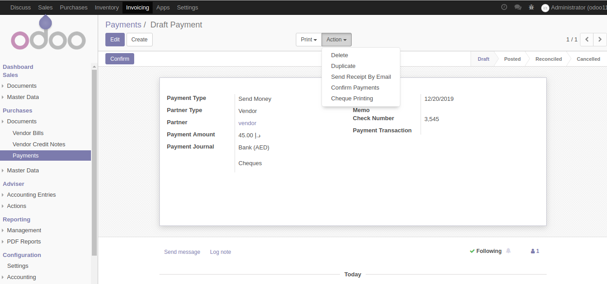
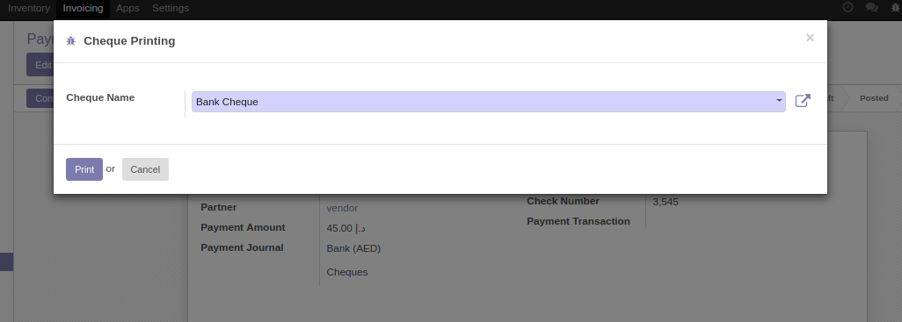
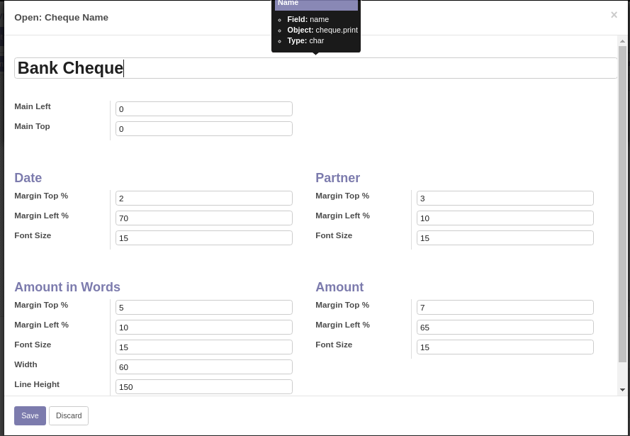
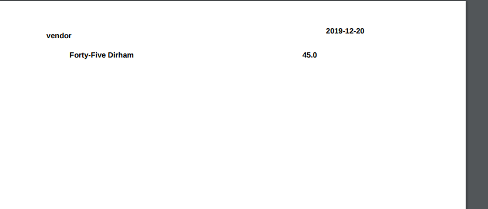

Overview
This module helps to provide Outgoing cheque print option.
Features
Cheque Printing for Cheque payments.
This module offers the basic functionalities to make payments by printing cheques.The cheque settings are located in the accounting journals configuration page.(payment method)
Screenshots
New Payment creation - Invoicing --> Purchases --> Documents --> Payments -> Create

Cheque Print option

Once the Print button clicked, the pdf file will be download.
Cheque Print Configuration

Pdf Print
